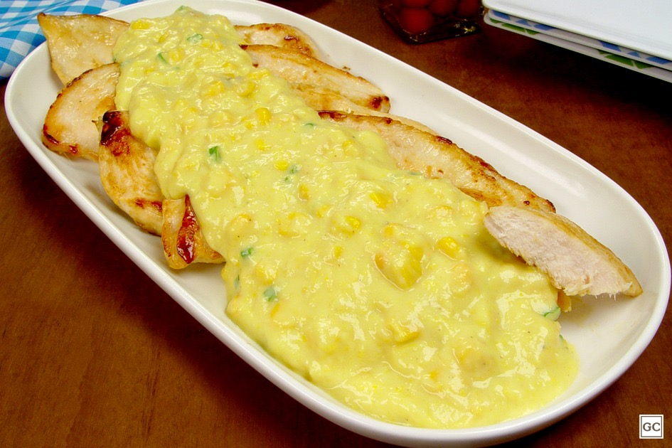

Aves · Frango
Frango com creme de milho

Ingredientes
- 6 colheres (sopa) de manteiga ou margarina
- 6 colheres (sopa) de farinha de trigo
- ½ colher (chá) de sal
- 3 xícaras (chá) de leite
- 1 lata de milho verde, escorrido
- 2 xícaras (chá) de carne de frango picada (sobras)
- Pimenta-do-reino a gosto
- Molho inglês a gosto (opcional)
- Queijo parmesão ralado, para gratinar (opcional)
Modo de preparo
- Derreta a manteiga ou margarina; junte a farinha e mexa bem.
- Acrescente o leite aos poucos, mexendo sempre, até obter molho liso.
- Junte milho, pimenta, sal e frango. Ajuste o tempero; se quiser, um pouco de molho inglês.
- Sirva assim ou coloque em refratário, salpique parmesão e grate no forno.